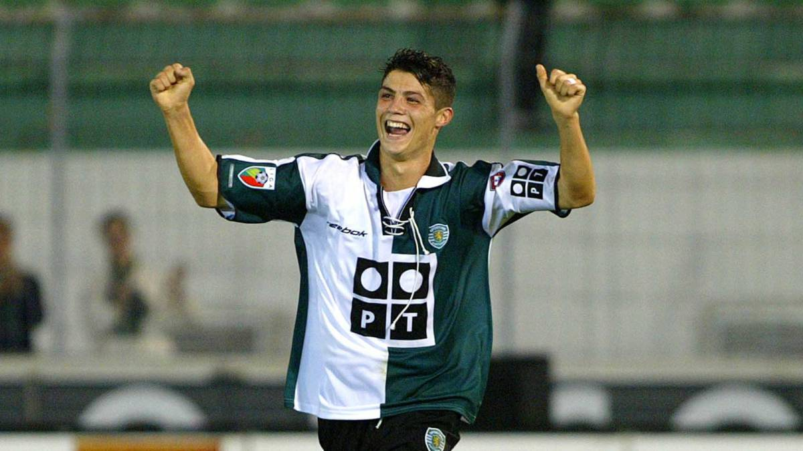
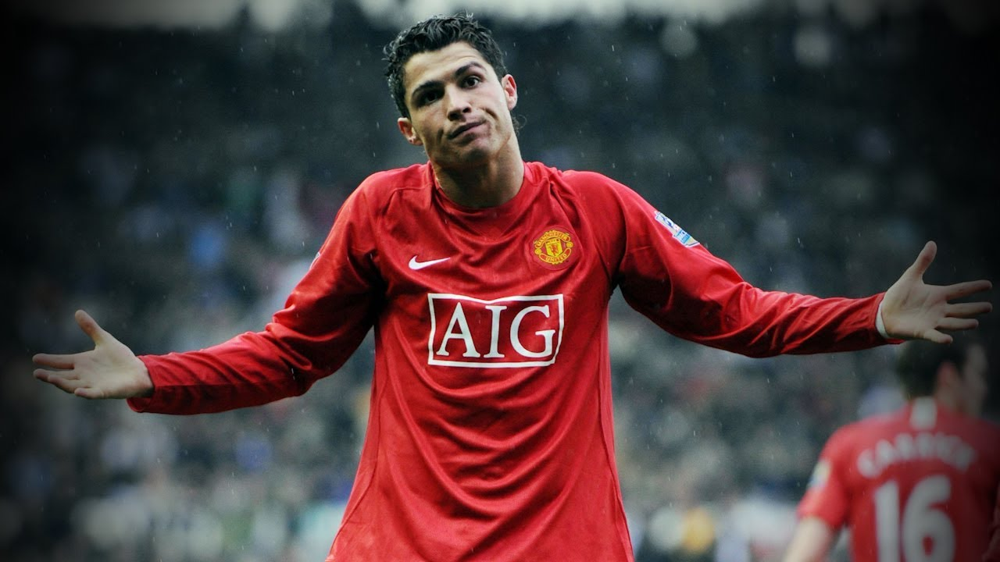
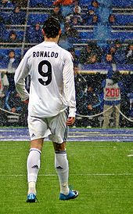

Sporting CP (Youth-2003): The Beginning
Cristiano Ronaldo is a football legend and, by many, considered to be the greatest player of all time. At the young age of 16, Cristiano was promoted to the senior team of his home club: Sporting CP and made his senior debut on October 7, 2002. In only one season for the Portugese club, the young player scored 5 goals in 31 matches and caught the eye of Premier League club Manchester United. There, he became the most expensive teenage signing in the English Premier League.
Manchester United (2003-2009): Development
Ronaldo made his senior debut for ManU in August of 2003 where he donned the number 7 shirt, a number reserved for some of the best players. Ronaldo scored his first goal in the Premier league that November and began his 6 year legacy at the club. Over these 6 years, he helped Manchester United win 9 trophies, including the Champions League, the FA Cup and Community Shield, the FIFA Club World Cup, the Premier League (three times), and more. His goal count in Manchester also was revolutionary, breaking the 100 goal mark for the club (118) and breaking his own 100 goal mark to a total of 123 career club goals. He also was given many individual awards, including the Ballon D’Or (the highest honor in international football), the European Golden Boot, the Puskas Award for best goal of the season (a 40 yard banger that Ronaldo argues was the best goal he has ever scored), and more. Overall, his time at the club was a heavily successful growing stage that led him to become the legendary player that he was when he made his 2009 transfer to La Liga side Real Madrid.
Real Madrid (2009-2010): The First Season in Greatness
In 2009, Ronaldo was transferred to Real Madrid for a world record transfer fee of €94 million and a buyout clause of €1 billion. Here, he was welcomed by a world record debut crowd of 80,000 fans as he donned the number 9 shirt. He scored not only in that debut game, but in the next three games as well, becoming the first Real Madrid player to score in their first 4 fixtures. He also scored in his first Champions League game with the club, but was injured shortly after in an international game with Portugal, leading to a 7 week sideline for the player. Despite this, he came in second for the Ballon D’Or and the FIFA World Player of the Year Award that season, only behind footballing legend Lionel Messi, a player for Barcelona (the rival team of Real Madrid).It was during this season that Ronaldo and Messi developed a competitive rivalry and began their duo trek to become the two greatest footballers this world has ever seen. During this season, Ronaldo totaled 33 goals for Madrid, including his first hat-trick for the spanish side in a 4-1 victory over Mallorca, and was handed his old number (7) by Raul for the 2010-2011 season. It was then that Ronaldo was formally able to restate his nickname CR7. He continued at Real Madrid through 2018.